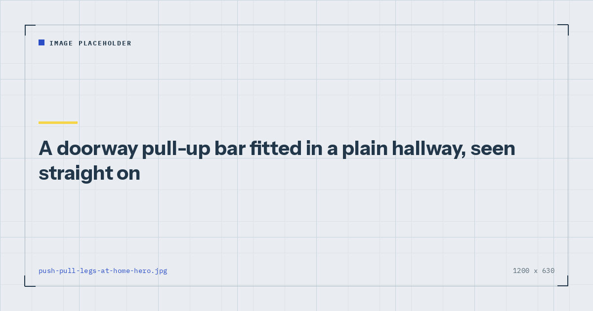

Quick Workouts & Plans
Push Pull Legs at Home With No Equipment
PPL is the most popular split in the gym and the most awkward one at home, for one reason: pushing needs nothing and pulling needs something. Here is how to run it anyway.

Push, pull, legs divides training by movement direction rather than body part. It works well because it groups muscles that naturally work together, and because it scales cleanly from three sessions a week to six.
At home it runs into one specific problem, and most articles about it quietly skip past that problem. This one does not.
The pulling problem
Pushing exercises need nothing but a floor. Push-ups, pike push-ups, dips off a chair — all free, all scalable to genuinely hard variations.
Pulling needs something to pull against. There is no bodyweight rowing or pulling movement that requires zero equipment and zero furniture. This is not a minor inconvenience: the back is a large amount of muscle, and a split that trains pushing three times a week and pulling essentially never will leave you with imbalanced strength and shoulders that feel worse rather than better.
So before running PPL at home, you need to solve pull day. In rough order of how well they work:
- A doorway pull-up bar. The single best home training purchase, and usually cheap. Fit and safety matter — see the doorway pull-up bar guide before buying.
- Resistance bands. Anchored in a door, they cover rows and pulldowns properly. Details in the resistance bands guide.
- A sturdy table. Inverted rows underneath it. Free, effective, and limited mostly by how much you trust your table.
- A towel around a door handle. Genuinely works for rows. Least good, but it costs nothing — covered in rows at home.
Check what you are attaching to. Doorway bars rely on the frame, not the door, and a poorly fitted one can pull trim off the wall or fail entirely. Test with your feet still on the ground before committing your full weight, and never use one on a frame that flexes.
Push day
Chest, shoulders and triceps. Warm up for five minutes, rest 90 seconds between sets.
- Pike push-up — 3 × 6–12. Hardest pushing movement most people can access at home, so it goes first.
- Push-up — 4 × 8–15 at an incline that makes those numbers hard.
- Chair dip — 3 × 8–15.
- Wide push-up — 2 × to two reps short of failure.
- Diamond push-up or close-grip variation — 2 × to two short of failure.
If regular push-ups have become easy, the progression is elevation and leverage rather than more repetitions — the ladder is in how to build chest muscle without weights.
Pull day
Back and biceps. This session assumes you have solved the equipment question above.
- Pull-up or chin-up — 4 × as many as possible. If you cannot yet do one, use the progression in how to do your first pull-up at home.
- Inverted row — 4 × 8–15, feet further forward to make it harder.
- Band or towel row — 3 × 12–20.
- Face pull or band pull-apart — 3 × 15–25. Small, unglamorous, and the most useful thing most desk workers can do for their shoulders.
- Chin-up hold or towel curl — 2 × 30–45 seconds.
Legs day
The easiest to run with nothing, provided you accept single-leg work.
- Bulgarian split squat — 4 × 8–12 each leg.
- Bodyweight squat, 3-second descent — 3 × 15–25.
- Single-leg glute bridge — 3 × 10–15 each side.
- Reverse lunge — 3 × 10–12 each leg.
- Calf raise, single leg, off a step — 3 × 15–25.
Two-legged squats stop being a strength stimulus quickly. Almost all of legs day should be single-leg once you are past the beginner phase — more on that in training legs at home without equipment.
How to schedule it
| Frequency | Pattern | Each muscle trained |
|---|---|---|
| 3 days | Push / Pull / Legs, one rest day between | Once a week |
| 4 days | Rolling P/P/L/P, rest, repeat | Roughly every 5 days |
| 6 days | P/P/L/P/P/L, one full rest day | Twice a week |
This is where PPL has an honest weakness at three days a week: each muscle group gets trained once. Meta-analytic evidence on training frequency suggests that, with weekly volume held equal, higher frequency is similar or slightly better for hypertrophy.1 Running PPL three days a week is therefore probably not optimal, though it is far from useless.
Six days a week gets each muscle group twice, which is better on paper. It is also six evenings, which is where most home trainees lose. Be honest about which failure mode is more likely for you.
A split you run four times out of six weeks beats a better split you run twice.
Is PPL actually the right split at home?
Sometimes. It suits you if you can genuinely train five or six days a week, and if you have solved pulling properly with a bar or bands.
If you train three days a week — which is most people — a full-body or lower/upper structure hits each muscle group more often for the same total time, and is the more defensible choice. If you can manage four days, upper/lower is usually better than PPL.
The case for PPL at home is really about enjoyment and focus rather than optimisation. Some people train more consistently when each session has a clear identity, and consistency beats theoretical optimality every time.
Making each session harder over time
The hardest part of running PPL without weights is that you cannot simply add five kilos. Progression has to come from somewhere else, and the three available routes work at different speeds.
More sets is the fastest lever and the one that works first. Weekly volume per muscle group has a dose-response relationship with growth up to a point,2 so going from three sets to four on your main movements is a real increase in stimulus. It also runs out: past roughly twenty hard sets per muscle group per week, most people are accumulating fatigue rather than stimulus.
Closer to failure is the lever that matters most in bodyweight training specifically. Because the load is fixed at your own bodyweight, effort is doing the work that load would otherwise do. Evidence comparing sets taken to failure with sets stopped short suggests you do not need to hit absolute failure every time, but you do need to be near it.3 In practice: leave one to three repetitions in reserve on early sets, and take the last set of each exercise close.
Harder variations is the lever with the longest runway. A push-up becomes a decline push-up becomes an archer push-up. A row becomes a row with the feet elevated. This is what keeps bodyweight training productive for years rather than months, and the full ladder for each pattern is in bodyweight exercise progressions.
Use them in that order. Adding a set is easy and immediately effective; changing to a harder variation requires you to be genuinely ready for it and will otherwise just wreck your form.
Three mistakes specific to home PPL
Letting push day quietly become the whole programme
Push day needs no equipment, so it always happens. Pull day needs a bar, so on a busy week it is the one that gets skipped. Over a few months this produces a genuinely lopsided body and shoulders that ache. If you can only complete two of three sessions in a week, make sure one of them is pull.
Treating legs day as the easy one
Because two-legged bodyweight squats are not hard, leg day often becomes thirty minutes of high-rep work that never approaches a meaningful stimulus. If your legs session does not include single-leg work, it is probably not training your legs.
Running it three days a week and expecting six-day results
PPL at three days a week trains each muscle group once. That is a legitimate way to train, but it is not the same programme people describe when they talk about PPL producing rapid change, and expecting otherwise leads to abandoning a plan that was working exactly as it should.
Where to go next
If pull day is your bottleneck, fix it first with rows at home. If three days a week is your realistic ceiling, the three-day split is the better plan.
Frequently asked questions
Can you do push pull legs with no equipment?
Push and legs days work with nothing at all. Pull day genuinely needs something to pull against — a doorway bar, resistance bands, a sturdy table for inverted rows, or at minimum a towel around a door handle. Running PPL without solving that leaves the back badly under-trained.
How many days a week should I do PPL at home?
Six is optimal on paper because each muscle group is trained twice. Three is far more sustainable for most people but trains each group only once a week. If you can only manage three days, a full-body or upper/lower split is usually the better choice.
Is push pull legs good for beginners?
It is workable but not ideal. Beginners benefit from higher frequency per movement pattern, which full-body training delivers more easily at low weekly session counts. PPL becomes more attractive once you are training five or six days a week.
What can I use instead of a pull-up bar?
Inverted rows under a sturdy table are the best free option. Resistance bands anchored in a door are the best cheap one. A towel looped around a door handle works for rows if you have nothing else.
How long should each PPL session take?
Thirty to forty minutes including a warm-up. If a session is regularly running past forty-five minutes, you have added exercises rather than progressed the ones you had.
Sources and further reading
- Schoenfeld BJ, Ogborn D, Krieger JW. “Effects of Resistance Training Frequency on Measures of Muscle Hypertrophy: A Systematic Review and Meta-Analysis.” Sports Medicine, 2016;46(11):1689–1697. PubMed.
- Schoenfeld BJ, Ogborn D, Krieger JW. “Dose-response relationship between weekly resistance training volume and increases in muscle mass: A systematic review and meta-analysis.” Journal of Sports Sciences, 2017;35(11):1073–1082. PubMed.
- Vieira AF, Umpierre D, Teodoro JL, et al. “Effects of Resistance Training Performed to Failure or Not to Failure on Muscle Strength, Hypertrophy, and Power Output: A Systematic Review With Meta-Analysis.” Journal of Strength and Conditioning Research, 2021. PubMed.
- Currier BS, Mcleod JC, Banfield L, et al. “Resistance training prescription for muscle strength and hypertrophy in healthy adults: a systematic review and Bayesian network meta-analysis.” British Journal of Sports Medicine, 2023. PubMed.
- NHS. Strength and Flex exercise plan.
Comments
Comments are not enabled yet. Add a hosted comment embed (Disqus, Commento, Giscus) inside this container when you are ready.